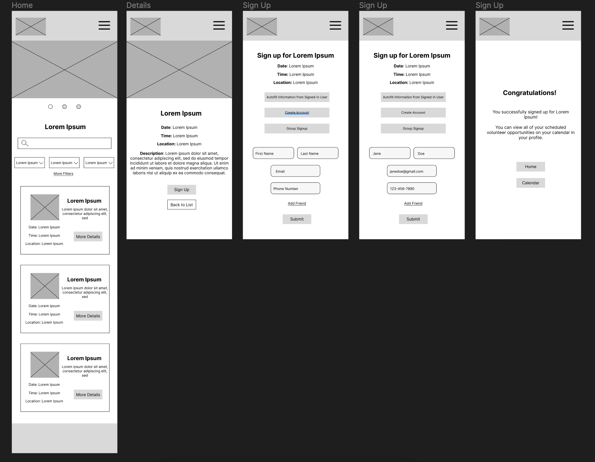

UX designer and researcher leading the app design from conception to delivery. Responsibilities included user research, wireframing, prototyping, mockup creation, and presentation creation.
Get Involved is a mobile-first app created to help people find ways to volunteer and serve those around them, or find help for projects that need a volunteer force. It is created to ease the awkwardness of asking for help, as those using the site are on the lookout for projects to help others in their community.
Ideal users can come from any age group or background. Volunteers of all kinds are needed for different projects. The web application can be used on phones or desktops, to appeal to different ages and abilities, and has had steps taken to be accessible.
People of all ages love to help others, and they also need help from others sometimes. One challenge was finding usability test participants of many different backgrounds to ensure accessibility
Research included competitive audits and persona creation to discover common user pain points.
Wireframes were created to be very simple for users. There are places for pictures for users to be engaged, the potential opportunities can be found from the home page, and users can autofill saved information from their profile if they have an account
-Users wanted more pictures, for volunteer opportunities, as well as hero images
-Users wanted group signup options
-Users wanted to sign in later if they just wanted to browse
Get Involved is usable, but will be engineered by me in the future. Calendar designs will be updated and added. More designs for volunteer opportunity creation will be added. Engineering will ensure accessibility with semantic tags for screen readers.